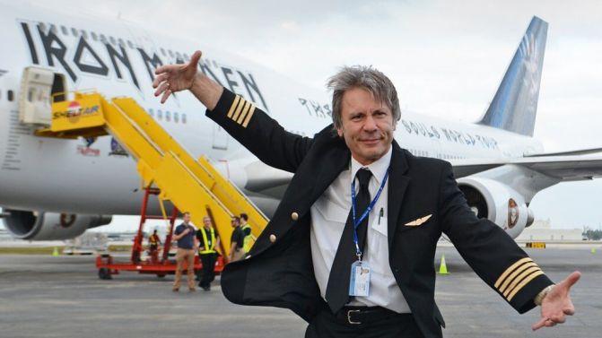

Érdekességek Bruce Dickinsonról és az Iron Maindenről
- Az Iron Maiden nem egyik napról a másikra vált ismertté. 1975 Karácsonyán alakultak és négy küzdelmes évük következett, mígnem kiharcolták a szerződést az EMI Recordsszal.
-
Az Iron Maiden híres kabalafigurája, Eddie the Head azért kapta ezt a nevet, mert eredetileg nem volt más, mint közönséges színpadi kellék. Egyetlen kísértetmaszkból (vagy nagy fejből) állt és a zenekari logó, illetve a dobcucc fölé függesztették ki.
- Bruce egyszer nyilvánosan beszélt a valóságshowk iránti ellenszenvéről, amit Sharon Osbourne (Ozzy felesége) annyira magára vett, hogy a 2005-ös Ozzfesten egy kisebb csapat élén tojással dobálta meg Bruce-t, az Iron Maiden koncertje közben.
- Bruce a zenekar mellett repülőgép pilóta ő fuvarozza a zenekart egy hatalmas utasszállítóval.
